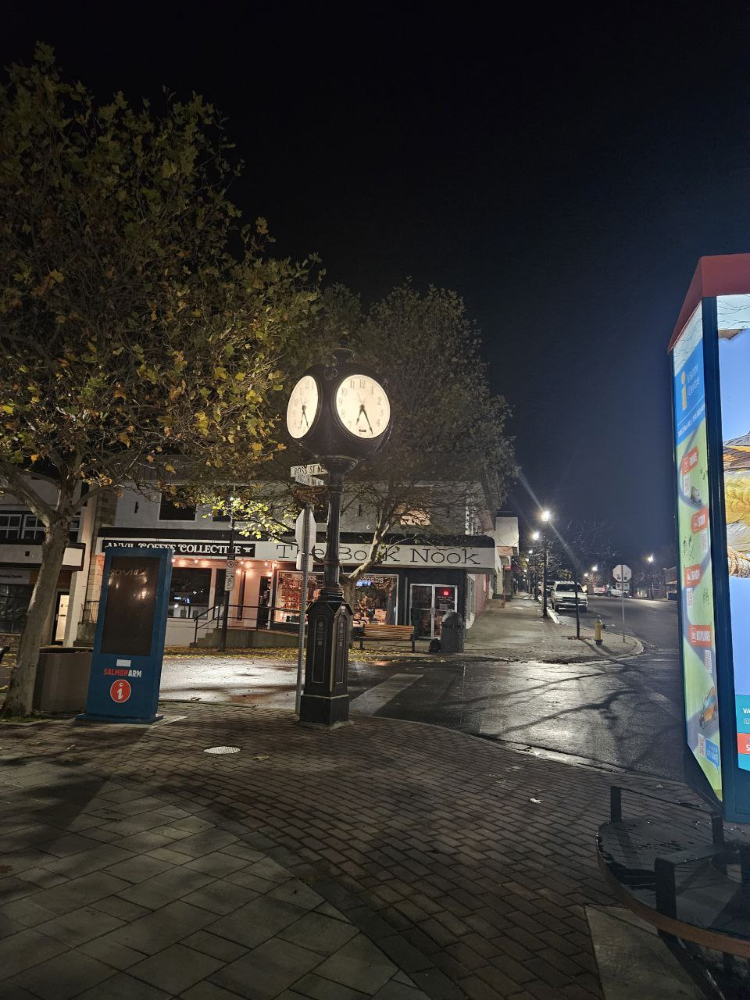

Places in Canada I have visited
I spent 3 years in Canada as a student. I grabbed every opportunity to do fun activities and visit tourist spots.
Stanley Park, Vancouver
photosStanley Park is a beautiful and famous urban park located in Vancouver, Canada. It covers more than 400 hectares and is surrounded by the Pacific Ocean and Vancouver Harbour. The park is known for its scenic seawall, lush forests, beaches, and stunning views of the city and mountains. Visitors can enjoy walking, cycling, sightseeing, and exploring attractions such as the Vancouver Aquarium and totem poles. Stanley Park is a peaceful place where people can relax and enjoy nature while still being close to the city. It is one of Vancouver’s most popular destinations for both locals and tourists.
Granville Island
Granville Island is a popular destination in Vancouver, Canada, known for its lively atmosphere and beautiful waterfront setting. It is home to the famous Granville Island Public Market, where visitors can find fresh food, local products, and handmade crafts. The island also has many restaurants, shops, galleries, and art studios to explore. Visitors can enjoy walking around the area and taking in views of False Creek and the Vancouver skyline. Granville Island is also a great place to experience local culture and creativity. It is one of Vancouver’s most popular attractions for both locals and tourists.
Richmon Night Market
Richmond Night Market is a popular summer night market located in Richmond, near Vancouver, Canada. It is known for its lively atmosphere, delicious street food, and wide variety of Asian-inspired dishes. Visitors can enjoy foods such as grilled meats, noodles, desserts, and refreshing drinks while exploring the many stalls. The market also features games, shopping booths, and colorful decorations that create a fun and energetic environment. It is a great place to experience different flavors and enjoy an evening with friends or family. The Richmond Night Market is one of the most popular seasonal
Salmon Arm

After living in Vancouver for more than a year, I moved to Salmon arm and lived there for more than 2 years